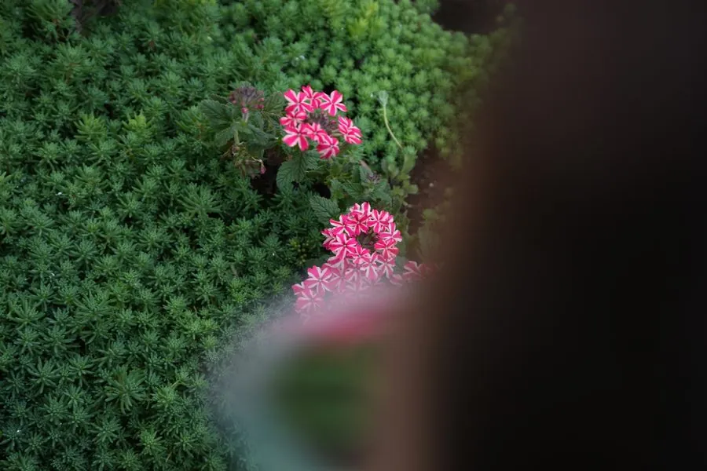

花卉与草本 · 植物界
美女樱 Verbena hybrida

马鞭草科马鞭草属多年生草本，花冠五裂、聚成伞房状花球，色彩丰富、花期极长，是花坛与地被的常用花卉。
- 分类
- 门被子植物门纲木兰纲目唇形目科马鞭草科属马鞭草属
- 栖息环境
- 原产南美，栽培于花坛花境，喜光喜湿、较耐寒
- 地理分布
- 原产南美洲；中国各地广泛栽培
- 保护级别
- 暂无评估；栽培观赏植物，不涉及保护等级
物种志
美女樱为马鞭草科马鞭草属多年生草本，常作一年生或二年生栽培，高二十至五十厘米，茎四棱、匍匐或直立，被短毛。叶片对生，长卵形，边缘有粗锯齿，表面粗糙。花组成顶生的伞房花序，花冠先端五裂，颜色有红、粉、紫、白、蓝等，花期五月至十月；小坚果长圆形，成熟时褐色，果期秋季。
美女樱原产南美洲，由多个原种杂交育成，中国各地广泛栽培。它喜光、喜温暖湿润，较耐寒，适宜疏松肥沃、排水良好的土壤，忌积水。花球紧密、色彩鲜艳、花期长，是花坛、花境、道路绿化和吊篮的常用材料，也可作地被；匍匐类型可铺展成花毯。栽培中需及时摘心促分枝，并保持通风以防白粉病。
形态与习性
- 株高20–50 cm，茎四棱
- 花期5–10 月，花冠五裂
- 果期秋季，小坚果褐色
- 光照喜光，全日照花球更密
- 水分喜湿润，忌积水
- 土壤疏松肥沃、排水良好
- 主要用途花坛、花境、吊篮与地被
趣味知识
- 美女樱的花聚成伞房状花球，远看像一个个彩色的小绣球。
- 它的茎呈四棱形，匍匐类型可铺满地面，形成彩色花毯。
- 美女樱品种极多，同一花球上常因花朵开放早晚而呈现深浅不同的颜色。